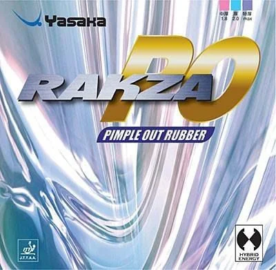

Madeira Clássica XIOM - Novus Extreme S
Madeira clássica de 7 camadas com foco em um jogo de velocidade e precisão. Ideal para atletas que priorizam o controle de bola absoluto.
CATAPULTA 8.1
Camadas 7
mm 7,1
COMPRIMENTO 157
LARGURA 150
GRIP FL
VIBRAÇÃO 7.6
VELOCIDADE 9.5
Borracha Forehand: Xiom Omega 5 Tour!
Borracha XIOM - Omega 5 Tour Dyn F
Borracha para elevar o nível de seu jogo em uma combinação perfeita de controle e velocidade.
Dureza: 47,5.
Efeito: 8,0.
Velocidade: 8,3.
Precisão: 8,8.
Cor Vermelho
Aprovação 79-035
Borracha Backhand: Yasaka Rakza PO

Rakza PO
RAKZA PO é uma das várias borrachas com a folha superior recentemente desenvolvida usando principalmente goma de borracha natural. Isso melhora o nível de aderência e a potência do giro drasticamente. A folha superior é combinada com a nova “Power Sponge”. A folha superior e a “Power Sponge” trabalham em perfeita sinergia, produzindo a borracha Hybrid Energy.
Com a RAKZA PO, a Yasaka desenvolveu uma borracha com espinhas curtas e maior capacidade de rotação, devido ao formato da geometria das espinhas e ao uso de goma mais natural na folha superior.
Características - Velocidade
Dureza da esponja - 4
Efeito embutido - Sim
Vida Útil - 4
Dureza da esponja: 5 = dura, 1 = macia Ciclo de vida da borracha: 5 = longo, 1 = curto